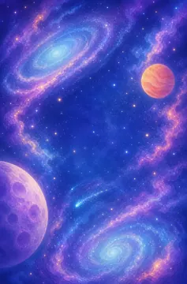

Ball is God?! Draai de toren. Word de impact.
Een hardcore arcade met verticale afdaling waarbij horizontaal slepen de toren rond de vallende Espa draait. Sla veilige landingen over, laad een combo-smash op en breek door een mythische wereld heen waarin één onbeschermde treffer de run beëindigt.
Actieve productie: tien locatiescènes, eindbazen, vertakte dialogen en karmapaden die de spelregels veranderen.
Roterensleep de toren rond Espa
Risicosla drie veilige landingen over
Verpletterenbreek door het platform
Binnen de huidige build
Karma verandert meer dan de dialoog.
Lichte, neutrale en donkere karmapaden veranderen het gedrag van het schild, de waarschuwingssignalen, de agressie van vijanden en de fasen van eindbazen, zodat het verhaal verandert hoe je speelt.
Buildstatus Actieve productieAlle tien dialoogwerelden
Dialoogachtergronden voor alle tien werelden, in afdalingsvolgorde van Ena tot Deka.


Huidige productie-UI
Niveaukeuze, dialoog- en resultaatschermen in de huidige build.
Dit is de huidige flow in de volgorde waarin je hem tegenkomt: niveaukeuze, dialoog, een mijlpaalkeuze, dan de overwinning of een apart verliesscherm. Elk beeld hieronder gebruikt kunst uit het Unity-productieproject.
De hemelroute selecteert gegenereerde niveaus in tien hoofdstukken van 100 niveaus.
Het productiemenu brengt tien locaties in hoofdstukken van 100 niveaus in kaart en opent rechtstreeks naar de geselecteerde run.

 201
201Dialoog speelt zich af in de locatie zelf.
Het portret van het personage, de locatiekunst en het naamplaatje van de spreker delen één verticaal kader.


Shash
Ga dan verder, maar denk niet dat het gemakkelijk zal zijn. Er wachten je Tria, waardoor alles wat voorafging slechts een kleinigheid lijkt.
04 / Mijlpaalkeuze
Het antwoord wordt onderdeel van de afdaling.
Bij de lokale niveaus 90 en 100 vraagt het speciale paneel om een beslissing tussen verschonen of doden voordat de dialoog de run afrondt.

Verschonen
Doden
05 / Resultaatmenu's
De overwinning gaat door. Een nederlaag keert terug naar dezelfde uitdaging.
De huidige build heeft twee afzonderlijke resultaatstatussen: PanelWin biedt opnieuw spelen en het volgende niveau, terwijl PanelOver één onmiskenbare actie om opnieuw te spelen behoudt.
Overwinning · PanelWin
Afdaling voltooid
 Opnieuw spelen
Volgende
Opnieuw spelen
Volgende
Opnieuw spelen
Volgende
Dialoogcast
Gezichten die je onderweg naar beneden tegenkomt.
Alle 25 personages met geldige open-en-gesloten productieportretten zijn hieronder opgenomen. Beweeg de cursor over een kaart of stel de focus erop in om van expressie te wisselen.


Speloverzicht
Ball is God?! is een hardcore arcadespel over vallen door een roterende toren.
Het idee
Leid Espa door een goddelijke toren naar beneden. Eén fout kan de run beëindigen en je grote keuzes veranderen hoe de wereld speelt.
Huidige build
Er zijn tien locatiescènes, procedurele torengeneratie, combo-smash, veegschild, eindbaasconfiguraties, vertakkende dialogen, productiemenu's en expressieklare portretten geïmplementeerd.
Publiek
Spelers die houden van pittige mobiele arcadespellen, risk-and-reward-timing en eindbazen, met een verhaal om te volgen.
Status
Actieve productie. Recent werk omvat runtimesystemen, wereldkunst, testen en hoe het spel op een telefoon speelt.
Functies
Wat je doet in Ball is God?!
Daling door slepen om te roteren
Horizontaal slepen draait de toren rond de automatisch vallende Espa, zodat gaten, gevaren en veilige platforms goed worden uitgelijnd.
Hardcore-arcadedruk
Eén onbeschermde klap beëindigt de run, dus je moet de toren lezen en elke zet timen.
Eindbazen en mythische werelden
Tien locatiescènes, elk met eigen eindbazen, dragen het verhaal van de ene wereld naar de volgende.
Keuzes die de regels veranderen
Genade, kracht en karma veranderen de dialoog, schildregels, agressie van vijanden, waarschuwingssignalen en eindbaasfasen.
Gameplay-loop
Zo speel je Ball is God?!
- Stap 01Lees de afdaling
Scan de volgende platforms, gaten en gevaren en zoek naar veilige timingvensters terwijl je valt.
- Stap 02Draai de toren
Horizontaal slepen draait de wereld rond Espa, zodat je een veilig platform of een bewuste opening uitlijnt.
- Stap 03Risico en verplettering
Sla drie platforms over om een combo-smash op te laden en breek vervolgens door structuren heen terwijl het schild één dodelijke fout opvangt.
- Stap 04Kies het gevolg
Genade en kracht vormen karma, dialoog en de gameplay-regels die worden overgedragen op vijanden en eindbazen.
Verhaal / wereld
Een mythische toren waar je keuzes je naar beneden volgen.
Ball is God?! begon vanuit een fascinatie uit de kindertijd voor mobiele arcades met verticale afdaling: gaten lezen, snel reageren en instinctief overleven.
Het format kon meer aan: eindbazen, personages met persoonlijkheid, een verhaal en morele spanning. Het huidige project volgt Espa door tien locatiescènes en een cast van vreemde personages, met keuzes die zowel het verhaal als het spel veranderen.
Zo werd het doel een eenvoudig arcadespel met verticale afdaling, met de druk van een eindbaasgevecht en de gevolgen van een verhaalgedreven RPG.
- Visie
- Een arcadespel met een roterende toren en een mythisch verhaal
- Huidige wereldomvang
- Tien locaties en eindbaasconfiguraties
- Verhaalfase
- Compleet verhaalconcept in lange vorm
- Productiestatus
- Actieve productie
In één oogopslag
Eenvoudige sleepbesturing, met een verhaal dat de regels verandert.
Slepen om te draaien werkt meteen. De rest komt van mythische werelden, eindbazen en keuzes die het spel veranderen.
De huidige build combineert al deterministische torengeneratie, smashen met risico en beloning, falen na één treffer, eindbazen, vertakte dialogen en karma dat de gameplay verandert.
- Genre
- Verhaalgedreven arcade met verticale afdaling
- Platformdoel
- iOS/Android
- Sessievorm
- Snelle, op vaardigheden gebaseerde runs
- Studio
- WillowinWorlds
Materialen downloaden
Ball is God?! pers- en makermaterialen
WebP-voorbeelden voor persberichtgeving, beoordeling door uitgevers en referenties voor storepagina's. Bronbestanden in volledige resolutie zijn op aanvraag beschikbaar.
Merk en karakters
Het spelpictogram plus alle 25 huidige personages met volledige productiedialoogportretten. Namen komen overeen met de Unity-lokalisatiesleutels.
EspaPortret van spelerspersonage.
RevlaProductiedialoogportret.
ShashProductiedialoogportret.
ShushProductiedialoogportret.
ShishProductiedialoogportret.
GigoProductiedialoogportret.
GogaProductiedialoogportret.
GigaProductiedialoogportret.
AskoldProductiedialoogportret.
MirasProductiedialoogportret.
HihProductiedialoogportret.
HehProductiedialoogportret.
HahProductiedialoogportret.
MusyaProductiedialoogportret.
DusyaProductiedialoogportret.
SusyaProductiedialoogportret.
VladusProductiedialoogportret.
FrishaProductiedialoogportret.
LurenProductiedialoogportret.
KurenProductiedialoogportret.
Don YagonProductiedialoogportret.
LuryaProductiedialoogportret.
KhleyaProductiedialoogportret.
VaronProductiedialoogportret.
WhiteProductiedialoogportret.
Menu-achtergronden
Huidig productiekunstwerk gebruikt door het hemelse niveauselectiesysteem.
 Hemels menu
Hemels menuWerelden met verticale afdaling
Complete set van tien huidige locatieachtergronden, op volgorde van Ena tot Deka.
 01 · LuchtwereldVerticale afdalingsachtergrond van Ena.
01 · LuchtwereldVerticale afdalingsachtergrond van Ena.


02 · RuimtewereldVerticale afdalingsachtergrond van Dyo. 03 · StormwereldVerticale afdalingsachtergrond van Tria.
03 · StormwereldVerticale afdalingsachtergrond van Tria.
 04 · SneeuwwereldVerticale afdalingsachtergrond van Tessera.
04 · SneeuwwereldVerticale afdalingsachtergrond van Tessera.
 05 · VulkaanwereldPente achtergrond; geanimeerd in het spel.
05 · VulkaanwereldPente achtergrond; geanimeerd in het spel.
 06 · OceaanwereldVerticale afdalingsachtergrond van Eksi.
06 · OceaanwereldVerticale afdalingsachtergrond van Eksi.
 07 · WoestijnwereldVerticale afdalingsachtergrond van Epta.
07 · WoestijnwereldVerticale afdalingsachtergrond van Epta.
 08 · BoswereldVerticale afdalingsachtergrond van Ohto.
08 · BoswereldVerticale afdalingsachtergrond van Ohto.
 09 · GrottenwereldVerticale afdalingsachtergrond van Ennea.
09 · GrottenwereldVerticale afdalingsachtergrond van Ennea.
 10 · HelwereldVerticale afdalingsachtergrond van Deka.
10 · HelwereldVerticale afdalingsachtergrond van Deka.
Verhaalarcade-achtergronden
Complete dialooglocatieset: de Hall of Light plus achtergronden voor alle tien werelden.
 00 · Hal van LichtAchtergrond van de openingsdialoog.
00 · Hal van LichtAchtergrond van de openingsdialoog.
 01 · LuchtdialoogEna verhaalachtergrond.
01 · LuchtdialoogEna verhaalachtergrond.
 02 · RuimtedialoogDyo verhaalachtergrond.
02 · RuimtedialoogDyo verhaalachtergrond.
 03 · StormdialoogTria verhaalachtergrond.
03 · StormdialoogTria verhaalachtergrond.
 04 · SneeuwdialoogTessera verhaalachtergrond.
04 · SneeuwdialoogTessera verhaalachtergrond.
 05 · VulkaandialoogPente verhaalachtergrond.
05 · VulkaandialoogPente verhaalachtergrond.
 06 · OceaandialoogEksi verhaalachtergrond.
06 · OceaandialoogEksi verhaalachtergrond.
 07 · WoestijndialoogEpta verhaalachtergrond.
07 · WoestijndialoogEpta verhaalachtergrond.
 08 · BosdialoogOhto verhaalachtergrond.
08 · BosdialoogOhto verhaalachtergrond.
 09 · GrotdialoogEnnea verhaalachtergrond.
09 · GrotdialoogEnnea verhaalachtergrond.
 10 · HeldialoogDeka verhaalachtergrond.
10 · HeldialoogDeka verhaalachtergrond.
Veelgestelde vragen over Ball is God?!
Veelgestelde vragen over Ball is God?!
Wat voor soort spel is Ball is God?!
Een hardcore arcadespel met verticale afdaling. Je draait een toren rond de vallende Espa, slaat veilige landingen over om smashes op te laden en breekt door mythische werelden heen.
Hoe speel je Ball is God?!
Sleep horizontaal om de toren te draaien, sla drie platforms over om een smash op te laden en veeg verticaal wanneer het cooldown-schild een dodelijke klap moet opvangen.
Is Ball is God?! al uit?
Nog niet. Het is in actieve productie, met werk aan runtimesystemen, wereldkunst, verhaalinhoud en testen. Er is geen openbare releasedatum. De doelplatforms zijn iOS en Android.
Wat maakt Ball is God?! anders?
Het combineert arcade-druk van risico en beloning met tien locaties en karma dat dialogen, vijanden, waarschuwingen, schilden en eindbazen verandert.
Wie maakt Ball is God?!
WillowinWorlds, een onafhankelijke studio die mobiele puzzel- en arcadespellen maakt.
Mag ik het persmateriaal van Ball is God?! gebruiken?
Ja, voor pers, beoordeling door uitgevers en storereferenties. Bronbestanden blijven privé tenzij u ons erom vraagt.
Ball is God?! Devlog
Wat is er veranderd en wanneer
- Wereldoppervlakken en gevarenvalidatie
De presentatie van personages, de deterministische generatie en de doornige gevaren kregen een gecombineerde visuele en validatieronde.
- juli 2026Productie-UI en karakterverfijning
Niveaukeuze, gedeelde actiebesturing, verticale dialoogkadrering en gepaarde gezichtsuitdrukkingen van personages zijn nu aanwezig.
- februari 2026Beoordeling van de projectscope
Het team voltooide een grote verhaalintegratieronde en beoordeelde de volledige omvang van het project: tien werelden, morele keuzes, eindbazen en meerdere eindes.
- april-mei 2025Verhaalherschrijving en vaardigheden
Het volledige verhaal werd herschreven, de vaardigheden van de personages werden verbeterd en de morele gevolgen werden duidelijker.
- augustus 2024De verhaalrichting begint
Het team besloot dat Ball is God?! meer moest zijn dan een simpele arcade-afdaling en voegde een mythisch verhaal en een visie met morele keuzes toe.
- juli 2024Origineel concept
Het project begon als het eerste spelidee van de studio: een snel verticaal arcadespel over vallen door een goddelijke toren.
- Huidige buildArcade en verhaal in één build
Afdaling door de roterende toren, combo-smash, veegschild, eindbazen, dialoog en karma werken nu samen in één build.